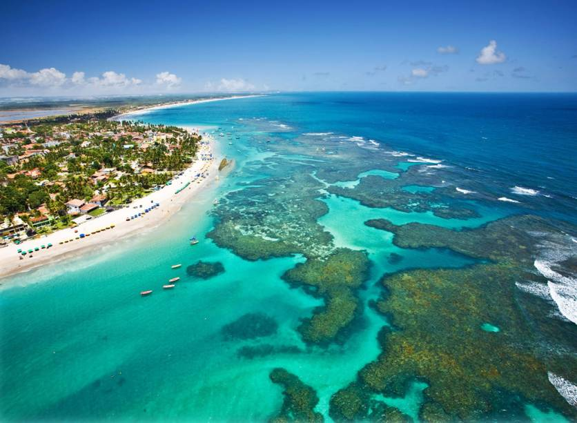
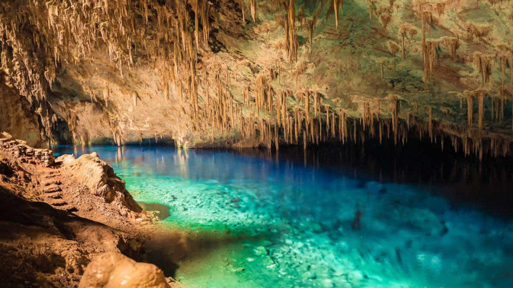

O Pontal do Atalaia fica localizado em Arraial do Cabo, Rio de Janeiro. O acesso ao Pontal é dado por uma escadaria
de mais de 200 degraus, mas todo o esforço vale a pena quando chegamos na praia. São duas praias em uma e quando a maré
está baixa elas viram uma só. É sem dúvidas um dos lugares mais lindos do estado. A areia é branca e bem fina, e a água é
calma e muito transparente. A paisagem é incrível e paradisíaca. As fotos ficam perfeitas, e é um ponto turístico muito visitado.
Há hotéis incríveis perto onde é possível se hospedar.
cursive
Parque do Ibirapuera
O parque do Ibirapuera se localiza no estado de São Paulo.
Há divertidas atrações no parque, para todos os gostos e o cenário em que se localiza
transmite tranquilidade por estar cercado de verde. O território é de quase 1.600 milhão m² de área verde.
O local pode ser aproveitado para fazer piqueniques, festas, e resenhas no gramado.
Alguma das atividades do parque são parquinhos infantis, bicicletas, esportes, caminhadas, a Praça da Paz, monumentos e museus,
artes como grafites, show de luzes, e até um prédio da Bienal.
Pelourinho
O bairro Pelourinho localiza-se na cidade de Salvador, no Centro Histórico. É um ponto indispensável para os turistas.
Há muitas apresentações e shows, restaurantes e bares, museus, igrejas históricas, praças e muitas lojas de artesanato.
O Pelourinho é um local cheio de turistas e movimentado. Tem hotéis e até mesmo pousadas espalhadas pelo local, além de
ter muitos restaurantes.
Porto de Galinhas
Se localiza em Pernambuco. É bem conhecido e é um lugar totalmente paradisíaco. A água cristalina e as piscinas naturais se destacam, além da incrível paisagem.
As fotos ficam incríveis com a vista existente. Tem diversas atividades para praticar como andar de bugue, mergulhar nos recifes de corais, e à noite
a praia é tomada por forró e diversão.

Gruta da Lagoa Azul
É localizada em Bonito/MS. O acesso à ela é fácil e é realizada visita guiada. A água é um azul inntenso e a estrutura da caverna é dada por espeleotemas,
que são rochas formadas dentro de cavernas. Para chegar é necessário descer 300 degraus, mas todo o esforço vale a pena pois a beleza da lagoa é fantástica.
Em Bonito tem diversas grutas, mas a da Lagoa Azul é denominada o cartão postal de Bonito, além de ser uma das maiores cavidades inundadas do planeta.

Chapada dos Veadeiros
A Chapada dos Veadeiros está localizada no estado de Goiás. É conhecida por suas incríveis cachoeiras, e suas paisagens expetaculares. A água é gelada mas o clima quente
faz com que seja tranquilo. As opções para chegar na chapada são ônibus ou carro. Abriga muitos parques e cachoeiras, onde é possível relaxar e curtir. Tem muitos
hotéis na região onde é possível se hospedar e curtir a viagem.
Eu sou a Larissa e esse é meu primeiro site. Decidi fazer um site sobre viagens e pontos turístico.